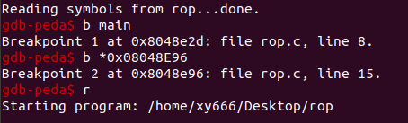

寄存器
x86寄存器(32位)
学习链接：https://blog.csdn.net/choufu1408/article/details/100655739
学习链接（荐）：代码人生。。。-CSDN博客_esi寄存器
摘要：
| 寄存器名称 |
用 途 描 述 |
| eax |
用于操作数和结果数据的累加器 |
| ebx |
指向数据内存段中的数据的指针 |
| ecx |
字符串和循环操作的计数器 |
| edx |
I/O指针 |
| edi |
用于字符串操作的目标的数据指针 |
| esi |
用于字符串操作的源的数据指针 |
| esp |
堆栈指针 |
| ebp |
堆栈数据指针 |
个人理解（知道这些差不多了）：
1
2
3
4
| ebp:栈底指针
esb:栈顶指针
eip:存下一条指令的地址
其他几个寄存器没有特别限定想存啥都行
|
x86寄存器(64位)
个人理解：
1
2
3
4
5
| rbp:栈底指针
rsp:栈顶指针
rip:存下一条指令
RDI, RSI, RDX, RCX, R8 和 R9 寄存器
注：System V AMD64 ABI (Linux、FreeBSD、macOS 等采用) 中前六个整型或指针参数依次保存在 RDI, RSI, RDX, RCX, R8 和 R9 寄存器中，如果还有更多的参数的话才会保存在栈上。
|
汇编基础
《CTF竞赛权威指南》P34，此处简记要点供个人随时复习
指令符：
1
2
3
4
5
6
7
8
9
10
11
12
13
14
15
16
17
18
19
20
21
22
23
24
25
26
27
28
29
30
31
32
33
34
35
| 遇到一个便记录一个：
数据传送与访问：mov
算术运算与逻辑运算：
inc/dec
add/sub
and/or
mul
xor
neg
跳转指令与循环指令：
jmp
LOOP
je
栈与函数调用：
push
pop
使用栈保存函数返回地址：
call
ret
其他：
lea
nop
leave
int 0x80
|
hello world
P55：
1
2
3
4
5
6
7
8
9
10
11
12
13
14
15
16
17
18
| .data
msg:
.ascii "hello world!"
len = . - msg
.text
.global _start
_start:
movl $len, %edx
movl $msg, %ecx
movl $1, %ebx
movl $4, %eax
int $0x80
movl $0, %ebx
movl $1, %eax
int $0x80
|
注（个人理解）：
.data表示data段
msg：定义字符串”hello world!”
len：字符串长度
len = . - msg：. 表示当前位置，msg表示字符串前面的一个位置，两者相减便得到了字符串长度
int $0x80：转入内核模式，进入内核模式前会根据相关寄存器(eax、ebx)的值进行相应的系统调用，所以在这之前会有两句设置寄存器值的汇编语句。
64位中使用syscall指令进入内核模式，32位使用int $0x80。
相关链接：
链接：.text、.global_start、_start
链接：https://www.cnblogs.com/snail-micheal/p/4189632.html
杂
and esp, 0FFFFFFF0h
自己写了个程序以供分析，发现了一句不知道用来干嘛的的汇编
经查阅资料：得知该句是用来优化、对齐的。
参考链接：and esp,0fffffff0h的作用 – 青山志 (qingshanzhi.com)
防止博主删博客，留图如下：
x86_get_pc_thunk_ax
参考链接：＜__x86.get_pc_thunk.ax＞有什么作用?_Freestyle Coding的博客-CSDN博客
call/retn/leave
1
2
3
4
5
6
7
8
9
10
11
12
13
14
15
16
17
18
19
20
21
22
23
| call:相当于将下一条指令地址入栈，然后jmp到后面那个函数处执行
(1)段内转移的CALL指令等价于两条指令：
push eip
jmp 目的位置
也就是说，执行段内转移的CALL指令时，相当于先后执行以上两条指令。
(2)段间转移的CALL指令等价于三条指令：
push CS
push eip
jmp 目的位置
retn:
RETN等价于一条指令：POP eip
RETF等价于两条指令：
POP eip
POP CS
而带有操作数的RETN/RETF指令则是在POP（ESP+4）之后，执行ESP=ESP+操作数1。
eip = [esp]
esp = esp + 4 //将esp中的数据出栈到eip中,同时ESP+4
leave:
mov esp,ebp
pop ebp //还原函数栈
|
dword ptr [ecx-4]
1
2
3
4
| dword 双字 就是四个字节
ptr pointer缩写 即指针
[]里的数据是一个地址值，这个地址指向一个双字型数据
比如mov eax, dword ptr [12345678] 把内存地址12345678中的双字型（32位）数据赋给eax
|
参考链接： 关于dword ptr 指令的意思_Kaiwii的博客-CSDN博客_ptr指令
esp
相关链接：
push/pop：8086汇编基础 push,pop指令执行时，sp怎么变_cherisegege的博客-CSDN博客_pop指令过后sp怎么变
retn/call/leave：执行retn、call、leave指令的时候，esp和eip的变化情况_comeonow的博客-CSDN博客
linux字符
链接：Linux通配符讲解 - 知乎 (zhihu.com)
GDB
1
2
3
4
5
6
7
8
9
10
11
12
13
14
15
16
17
18
19
20
21
22
23
24
25
26
27
28
| n
ni
s
si
c
b *<地址>
stack
finish
x
disas/disassemble (函数名)
i
i b
i r
i f
vmmap
|
查看内存指令x：
x /nuf 0x123456 //常用，x指令的格式是：x/nfu，nfu代表三个参数- n代表显示几个单元（而不是显示几个字节，后面的u表示一个单元多少个字节），放在’/‘后面
- u代表一个单元几个字节，b(一个字节)，h(俩字节)，w(四字节)，g(八字节)
- f代表显示数据的格式，f和u的顺序可以互换，也可以只有一个或者不带n，用的时候很灵活
1
2
3
4
5
6
7
8
9
10
11
| x 按十六进制格式显示变量。
d 按十进制格式显示变量。
u 按十六进制格式显示无符号整型。
o 按八进制格式显示变量。
t 按二进制格式显示变量。
a 按十六进制格式显示变量。
c 按字符格式显示变量。
f 按浮点数格式显示变量。
s 按字符串显示。
b 按字符显示。
i 显示汇编指令。
|
- x /10gx 0x123456 //常用，从0x123456开始每个单元八个字节，十六进制显示是个单元的数据
- x /10xd $rdi //从rdi指向的地址向后打印10个单元，每个单元4字节的十进制数
- x /10i 0x123456 //常用，从0x123456处向后显示十条汇编指令
例：$ x/136wx 0x7fffffffdf08
链接：https://blog.csdn.net/weixin_30697239/article/details/101103647
1
2
3
4
5
6
7
8
9
10
11
12
13
14
15
16
17
18
19
20
21
22
23
24
25
26
27
28
29
30
31
32
33
34
35
36
37
38
39
40
41
42
43
| #!/usr/bin/env python #python语言标记
from pwn import *
连接：
sh = porcess("./level0")
sh = remote("127.0.0.1",10001)
sh.close()
IO模块：
sh.send(data)
sh.sendline(data)
sh.recv(numb = 2048, timeout = dufault)
sh.recvline(keepends=True)
sh.recvuntil("Hello,World\n",drop=fasle)
sh.recvall()
sh.recvrepeat(timeout = default)
sh.interactive()
Shellcode生成器：
>>> print shellcraft.i386.nop().strip('\n')
nop
>>> print shellcraft.i386.linux.sh()
/* push '/bin///sh\x00' */
push 0x68
push 0x732f2f2f
push 0x6e69622f
...
from pwn import *
context(os='linux',arch='amd64')
shellcode = asm(shellcraft.sh())
或者
from pwn import *
shellcode = asm(shellcraft.amd64.linux.sh())
暂时只记这些
|
pwntools手册链接(复杂):开始使用 — pwntools 3.5.0 documentation (pwntoolsdocinzh-cn.readthedocs.io)
链接：pwntools使用 - 简书 (jianshu.com)
链接：cyclic
系统调用
1
2
3
4
5
6
7
8
9
10
11
12
13
14
15
16
17
18
19
20
21
22
23
24
25
26
27
28
29
30
31
32
33
34
35
36
37
38
39
40
41
42
43
44
45
46
47
48
49
50
51
52
53
54
55
56
57
58
59
60
61
62
63
64
65
66
67
68
69
70
71
72
73
74
75
76
77
78
79
80
81
82
83
84
85
86
87
88
89
90
91
92
93
94
95
96
97
98
99
100
101
102
103
104
105
106
107
108
109
110
111
112
113
114
115
116
117
118
119
120
121
122
123
124
125
126
127
128
129
130
131
132
133
134
135
136
137
138
139
140
141
142
143
144
145
146
147
148
149
150
151
152
153
154
155
156
157
158
159
160
161
162
163
164
165
166
167
168
169
170
171
172
173
174
175
176
177
178
179
180
181
182
183
184
185
186
187
188
189
190
191
192
193
194
195
196
197
198
199
200
201
202
203
204
205
206
207
208
209
210
211
212
213
214
215
216
217
218
219
220
221
222
223
224
225
226
227
228
229
230
231
232
233
234
235
236
237
238
239
240
241
242
243
244
245
246
247
248
249
250
251
252
253
254
255
256
257
258
259
260
261
262
263
264
265
266
267
268
269
270
271
272
273
274
275
276
277
278
279
280
281
282
283
284
285
286
287
288
289
290
291
292
293
294
295
296
297
298
299
300
301
302
303
304
305
306
307
308
309
310
311
312
313
314
315
316
317
318
319
320
321
322
323
324
325
326
327
328
329
330
331
332
333
334
335
336
337
338
339
340
341
342
343
344
345
346
347
348
349
350
351
352
353
354
355
356
357
358
359
360
361
362
363
364
365
366
367
368
369
370
371
372
373
374
375
376
377
378
379
380
381
382
383
384
385
386
387
388
389
390
391
392
393
394
395
396
397
398
399
400
401
402
403
404
405
406
407
408
409
410
411
412
413
414
415
416
417
418
419
420
421
422
423
424
425
426
427
428
429
430
431
432
433
434
435
436
437
438
439
440
441
442
443
444
445
446
447
448
449
450
451
452
453
454
455
456
457
458
459
460
461
462
463
464
465
466
467
468
469
470
471
472
473
474
475
476
477
478
479
480
481
482
483
484
485
486
487
488
489
490
491
492
493
494
495
496
497
498
499
500
501
502
503
504
505
506
507
508
509
510
511
512
513
514
515
516
517
518
519
520
521
522
523
524
525
526
527
528
529
530
531
532
533
534
535
536
537
538
539
540
541
542
543
544
545
546
547
548
549
550
551
552
553
554
555
556
557
558
559
560
561
562
563
564
565
566
567
568
569
570
571
572
573
574
575
576
577
578
579
580
581
582
583
584
585
586
587
588
589
590
591
592
593
594
595
596
597
598
599
600
601
602
603
604
605
606
607
608
609
610
611
612
613
614
615
616
617
618
619
620
621
622
623
624
625
626
627
628
629
630
631
632
633
634
635
636
637
638
639
640
641
642
643
644
645
646
647
648
649
650
651
652
653
654
655
656
657
658
659
660
661
662
663
664
665
666
667
668
669
670
671
672
673
674
675
676
677
678
679
680
681
682
683
684
685
686
687
688
689
690
691
692
693
694
695
696
697
698
699
700
701
702
703
704
705
706
707
708
709
710
711
712
713
714
715
716
717
718
719
720
721
722
723
724
725
726
727
728
729
730
731
732
733
734
735
736
737
| Linux:
1、应用程序调用库函数（API）；
2、API 将系统调用号存入 EAX，然后通过中断调用使系统进入内核态；
3、内核中的中断处理函数根据系统调用号，调用对应的内核函数（系统调用）；
4、系统调用完成相应功能，将返回值存入 EAX，返回到中断处理函数；
5、中断处理函数返回到 API 中；
6、API 将 EAX 返回给应用程序。
例：
movl $0, %ebx
movl $1, %eax
int $0x80
linux 系统调用号表：
原文链接：https://blog.csdn.net/qq_29343201/article/details/52209588
32位：
64位：
|
ROPgadget工具
安装&使用：
参考链接：(2条消息) ROPgadget 安装 错误处理 与使用_yongbaoii的博客-CSDN博客_ropgadget
参考链接：(2条消息) (Pwn)CTF工具 ROPgadget 的安装与使用介绍_半岛铁盒@的博客-CSDN博客_ropgadget命令
参考链接：ROPgadgets - 简书 (jianshu.com)
1
2
3
4
5
6
7
8
9
10
11
12
13
14
15
16
17
18
19
20
| 安装：
sudo apt-get install python-capstone
git clone https://github.com/JonathanSalwan/ROPgadget.git
cd ROPgadget
sudo python setup.py install
使用：
ROPgadget --binary rop --only 'pop|ret' | grep 'eax'
查找可存储寄存器的代码
ROPgadget --binary rop --string "/bin/sh"
查找字符串
ROPgadget --binary rop --only 'int'
查找有int 0x80的地址
......
|
偏移计算
例1：
题目链接：https://ctf-wiki.org/pwn/linux/user-mode/stackoverflow/x86/basic-rop/#ret2syscall
其中有这么一段：
前置ida反编译找到main函数处，tab键切至该界面，找到call指令对应的地址并在gdb中下断点：

ni单走，调试至该位置，查看到三句汇编指令（s地址装入eax，eax赋给esp，调用gets函数）
再看到ebp指向0xffffd178，esp指向0xffffd0f0（但这并不是s的起始地址），0xffffd0f0处存储的0xffffd10c才是s在栈上的起始地址（要解释清楚的话，得画个栈的图，还得有汇编基础，汇编我目前就学了些皮毛，解释不了，只知道以后遇到这种类似的这样算偏移准没错）
。计算规则：ebp（0xffffd178）+ 4（ebp上面的ret，覆盖ebp要4个字节）- s起始地址（0xffffd10c）= 0x70 = 112（10进制，0x是16进制前缀）
建议对比ret2txt看（https://ctf-wiki.org/pwn/linux/user-mode/stackoverflow/x86/basic-rop/#ret2text）
亟待补充的知识（写给个人看的）：汇编
需要复习的知识：栈
注：个人笔记，重在个人看懂
链接：pwn基础 | Sh4oBa1’s blog
链接(看ta的友链)：Sh4oBa1’s blog
链接(看ta的友链)：F4DE (f4de-bak.github.io)
链接：Kimengun的学习之路 (x1hy9.github.io)
链接：用github-hexo搭建博客 | TuNan’s Blogs (0xtunan.github.io)
链接(无意中发现的有关软件破解的博客)：(2条消息) EAX寄存器（关键跳，关键CALL）_song_10的博客-CSDN博客_eax寄存器
链接：(2条消息) song_10的博客_song-10_CSDN博客-C++,python学习笔记,攻防世界领域博主
GPS劫持：
暂时没空搞这个，为了防止原文被删除，本人在此copy一份
链接：https://toutiao.io/posts/uax8a1p/preview
0x00 原理介绍
GPS劫持有一定的破坏强度，攻击者利用路由、伪基站等技术来伪造GPS信号用于产生虚假的定位，这个技术不仅仅针对于手机，对其他设备都有一定的威胁，安全问题令人深思
HackRF是一个完全开源的项目，不管从软件还是硬件，已经国产化。设备可以在淘宝买，前提是我们需要借助 HackRF One
0x01 GPS动态轨迹伪造
我们可以通过伪造一个定位来进行重放，可以借助Google Earth（官网可下）
首先点击添加路径
选定一段道路并自定义名称，在此我们选择在巴厘岛库塔海滩走一趟
将路径另存为到本地
在此注意定存为格式选择.kml
然后我们需要把.kml文件转换成NMEA格式
在此借助的工具在后台回复“GPS劫持”即可获得
点击“Load KML file”打开文件
导出为NMEA文件
下载GPS数据
下载地址:
ftp://cddis.gsfc.nasa.gov/pub/gps/data/daily/2019/brdc/
此地址为美国国家宇航局的GPS数据回传的ftp文件服务器
将.txt文件拖到Ubuntu虚拟机中
选择最新文件下载 n.Z 文件
下载GPS-SDR-SIM
1
| git clone https://github.com/osqzss/gps-sdr-sim.git
|
若没有gcc可安装
进行编译
1
| cd gps-sdr-simgcc gpssim.c -lm -O3 -o gps-sdr-sim
|

gps-sdr-sim模块参数
运行， 生成 gpssim.bin 文件
./gps-sdr-sim -e <导航电文文件> -u <轨迹文件> -b 8
1
| ./gps-sdr-sim -e brdc3650.19n -g position.txt -b 8
|
最后使用 HackRF One 重放数据
hackrf_transfer -t<目标数据文件>-f<发射频率>-s<采样频率>-a<是否开启增益>-x<增益值>-R
1
| hackrf_transfer -t gpssim.bin -f 1575420000 -s 2600000 -a 1 -x 47 –R
|
*0x02 GPS静态定位伪造*
同样下载最新 n.Z 文件
下载地址:
ftp://cddis.gsfc.nasa.gov/pub/gps/data/daily/2019/brdc/
设置经纬度并生成数据样本
这里的经纬度我们选择巴厘岛的经纬度
经度：-8.616147
纬度：****115.674842
**
**
./gps-sdr-sim -e <GPS导航电文文件> -l <经度，纬度，海拔> -b <采样精度>
1
| ./gps-sdr-sim -e brdc3650.19n -l -8.616147,115.674842,100 -b 8
|
插上Hackrf，发射GPS数据开始伪造GPS信号
hackrf_transfer -t<目标数据文件>-f<发射频率>-s<采样频率>-a<是否开启增益>-x<增益值>-R
1
| hackrf_transfer -t gpssim.bin -f 1575420000 -s 2600000 -a 1 -x 0 -R
|
HackRF One 发送完GPS信号100秒后会自动停止，若想循环发送信号，加参数-R，过程需要几十秒的等待时间
这时候我们发现自己的定位已经在巴厘岛，说明欺骗成功
本文仅用于学习研究，切勿用于违法途径！
SSH隐身登录：
原文链接：https://blog.csdn.net/qq_41661056/article/details/103820951
1
2
3
4
5
6
7
8
9
10
11
| #远程登录w查看不到
ssh -T root@127.0.0.1 /bin/bash -i
#不记录ssh公钥在本地.ssh目录中
ssh -o UserKnownHostsFile=/dev/null -T user@host /bin/bash –i
#不留下.bash_history
unset HISTORY HISTFILE HISTSAVE HISTZONE HISTORY HISTLOG; export HISTFILE=/dev/null; export HISTSIZE=0; export HISTFILESIZE=0
#删除部分日志,比如以当天日期或者自己的登录ip
sed -i '/当前时间/'d /var/log/messages
|
WINDOWS 日志：
链接：windows日志
基础免杀手法暴风吸入：
链接：免杀
some blogs：
链接：https://www.const27.com/
哈哈哈，一篇比较有意思的博客：浅谈网警抓人全过程 (即使有 VPN) | LanYun の Blog (lanyundev.vercel.app)
你不喜欢被束缚，你要去争取自己想要的生活。